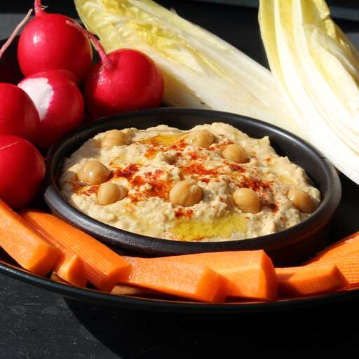

Hummus Recipe

Description
Authentic chummus is very different and SO much tastier than its American
counterpart. This chummus is creamy and delicate in taste rather than
overpowered with garlic or thick and pasty. It is eaten warm, fresh, and
as a whole meal spread out in a dish and drizzled with fresh olive oil. It
is scooped up with pita, raw onion slices, or just a fork. Do NOT use
canned chickpeas (garbanzo beans)!
Ingredients
- 3 cups dry garbanzo beans, soaked overnight
- 1 pinch baking soda (Optional)
- ½ cup extra-virgin olive oil
- ¾ cup tahini paste
- ¼ cup fresh lemon juice, or more to taste
- 1 large clove garlic, minced, or more to taste
- 1 teaspoon ground cumin
- salt to taste
- 1 tablespoon extra virgin olive oil, for drizzling
Steps
-
Rinse the garbanzo beans and and place in a pot. Fill with enough water
to cover by at least 1 inch. Add baking soda, if using. Bring to a boil
and then simmer over medium heat until the beans are very soft, 1 1/2 to
2 hours.
-
Drain the beans, reserving some of the water to use later. Reserve a
small handful of the whole beans for a garnish. Transfer the rest to a
blender or if you have a hand blender, a large bowl. Blend the beans
until smooth, adding 1/2 cup of olive oil gradually. Add some of the
reserved water if needed to help it blend. Add the tahini and blend in
along with the lemon juice. Blend in the garlic, cumin and salt.
-
Spread the hummus into a flat serving dish and garnish with the reserved
beans and a drizzle of olive oil.